/ CINQ LEÇONS · L’ARGENT
Gagner sa vie de loin.
Se faire payer de l’étranger, lire les frais, fixer un tarif, tenir sa trésorerie, garder ses clés : l’argent du travail à distance, quartier par quartier.
Chez Selma · exemple inventé
Ouvrir l’atlas
Ces leçons sont de l’éducation, pas un conseil financier ni un conseil en placement. Aucun signal de trading, aucune gestion de fonds, aucune promesse de gain.
Les règles changent d’un pays à l’autre. En Algérie, la loi 25-10 de juillet 2025 interdit l’achat, la vente, la détention et la promotion des crypto-actifs : vérifiez toujours la loi là où vous vivez.
Choisir un quartier
Les quartiers
0 quartier fait sur 5chemin de traverse : 0 / 1
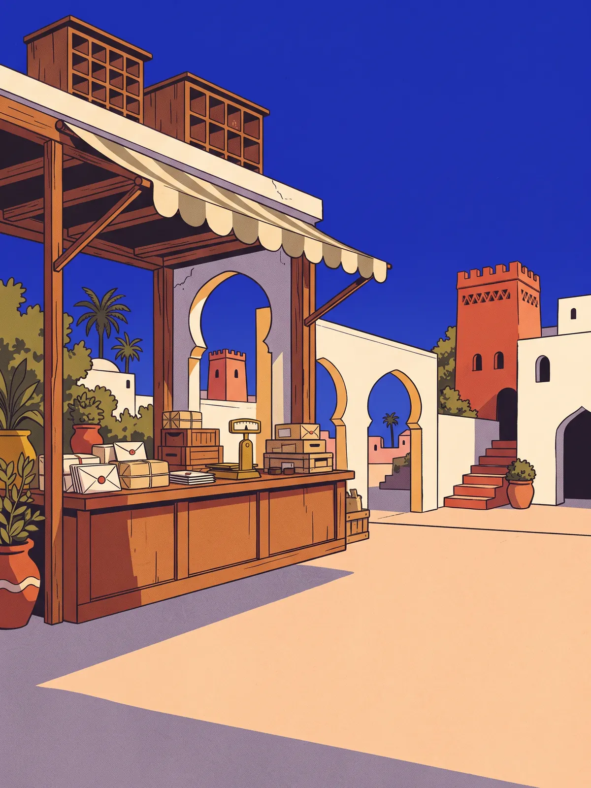


Le dossier · Acte I · 1 / 6
Route
Se faire payer de l’étranger · avec Techno Pigeon
Selma est illustratrice à Bordj Bou Arréridj ; le soir, elle donne le cours de gravure de la Lanterne. Un éditeur étranger veut la payer pour ses illustrations. Elle ne sait pas encore par où l’argent passera.
La règle
Avant le prix, la route : par où l’argent arrive, et ce que ce passage coûte.
La boîte à outils Les services pour se faire payer, avec leurs limites pays par pays →

À lire
Lire chaque explication
Ouvrez les explications qui vous intéressent : chacune dit pourquoi. Le quartier se termine par sa situation, pas par cette lecture.
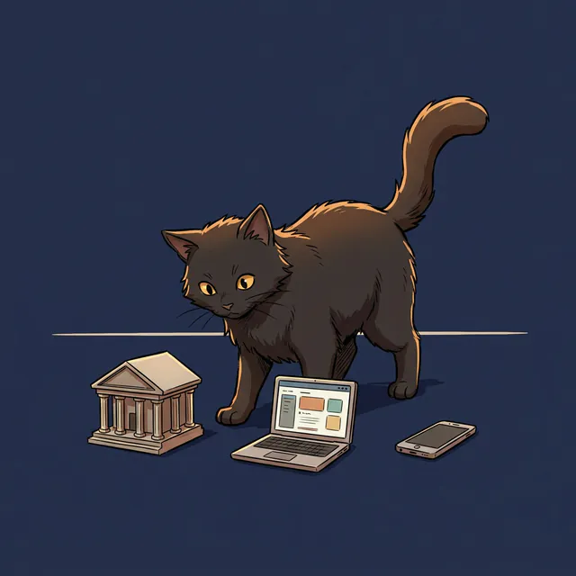
Un client à l’étranger peut vous payer par quatre routes. Aucune n’est la meilleure partout : comparez le délai, les frais et ce que votre banque accepte.
Virement bancaireLe client vire sur votre compte. Il lui faut votre IBAN ou votre numéro de compte, le code SWIFT/BIC de votre banque et une facture. Demandez d’abord à votre banque comment elle reçoit un virement de l’étranger, et dans quelle devise il vous est crédité.
Plateforme de paiementUn service en ligne encaisse pour vous et reverse sur votre compte ou votre carte. Vérifiez d’abord, sur le site du service lui-même, qu’il ouvre des comptes aux résidents de votre pays et comment on en retire l’argent.
Place de marché freelanceLa plateforme encaisse le client, garde l’argent jusqu’à la livraison, prend sa commission et vous reverse le reste. Simple pour démarrer : lisez sa commission et ses moyens de retrait avant d’accepter une mission.
CryptoLe client envoie des jetons, souvent un stablecoin, sur votre adresse. C’est rapide et irréversible. Légal dans certains pays, interdit dans d’autres, dont l’Algérie (loi 25-10) : vérifiez la loi là où vous vivez.
Se faire payer de l’étranger · La route d’abord, le prix ensuite.
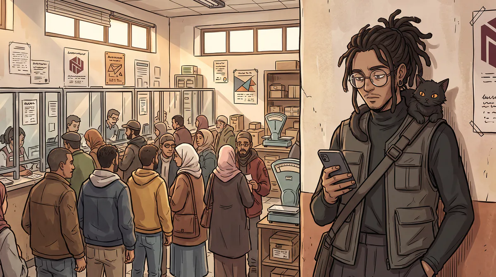
Le dossier · Acte I · 2 / 6
Change
Banques en ligne et comptes multidevises · avec Techno Pigeon
Pour recevoir l’argent de l’éditeur, deux services lui affichent « 0 frais ». Selma se méfie d’un zéro trop rond.
La règle
Un « 0 frais » se vérifie à trois endroits : le change, le transfert, la carte et le retrait.
La boîte à outils Les comptes en ligne, et ce qu’il faut vérifier avant d’en ouvrir un →
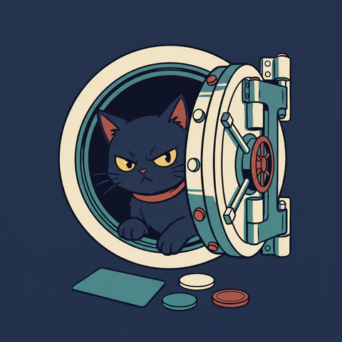
Lire chaque explicationÀ lire
Lire chaque explication
Ouvrez les explications qui vous intéressent : chacune dit pourquoi. Le quartier se termine par sa situation, pas par cette lecture.
Un compte multidevises garde plusieurs monnaies côte à côte et vous donne des coordonnées bancaires pour être payé. Ce qui coûte n’est presque jamais l’ouverture : ce sont trois frais.
Le changeLa marge prise quand une devise en devient une autre. Comparez le taux qu’on vous offre au taux du marché le même jour : l’écart est votre vrai prix.
Le transfertUn montant fixe ou un pourcentage à chaque envoi, à chaque réception ou à chaque retrait. Un petit pourcentage pèse lourd sur une grosse facture.
La carte et le retraitDes frais au distributeur, à l’étranger, ou au-delà d’un plafond mensuel. Lisez la grille avant de voyager, pas après.
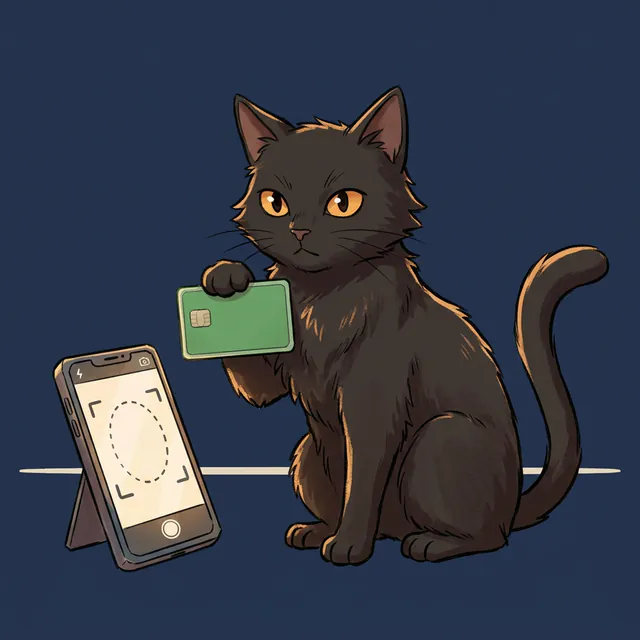
Quatre questions à poser avant d’ouvrir
- Le service accepte-t-il les résidents de mon pays ?
- Dans quelles devises puis-je recevoir ?
- Comment je retire, et à quel prix ?
- Qui garde et protège mes fonds ?
Banques en ligne et comptes multidevises · Comparer le taux appliqué, pas l’affiche.


Le dossier · Acte II · 3 / 6
Tarif
Fixer son tarif journalier · avec Ratman
L’éditeur demande un prix par jour. Selma part des chiffres du calculateur avant de mettre les siens.
La règle
Un tarif se calcule : ce qu’on veut garder, plus ses charges, divisé par les jours réellement facturés.

L’exercice de terrain
Le calcul, avec vos chiffres
Ouvert
Les chiffres de départ sont ceux de la leçon. Changez-en un : le résultat suit, et l’exercice est fait. Rien n’est envoyé.
Un tarif ne se devine pas, il se calcule : ce que vous voulez garder, plus vos charges, divisé par les jours réellement facturés.
·
· %
par jour facturé
de l’heure, pour 7 heures par jour
Dans la monnaie que vous tapez.
Fixer son tarif journalier · Diviser par les jours facturés, pas par les jours travaillés.

Le dossier · Acte II · 4 / 6
Trésorerie
Budget et trésorerie · avec Ratman
L’éditeur paie à 60 jours. Selma regarde combien de mois elle tient si rien ne rentre d’ici là.
La règle
La trésorerie, c’est le nombre de mois qu’on tient si plus rien ne rentre comme prévu.
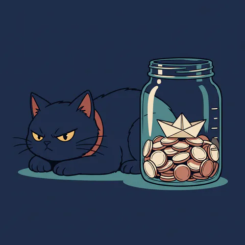
Faire l’exercice de terrainL’exercice de terrain
Le calcul, avec vos chiffres
Ouvert
Les chiffres de départ sont ceux de la leçon. Changez-en un : le résultat suit, et l’exercice est fait. Rien n’est envoyé.
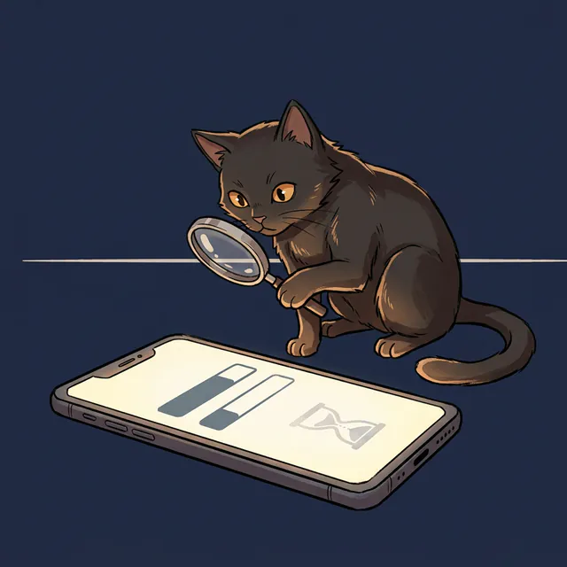
La trésorerie, c’est le nombre de mois que vous tenez si plus rien ne rentre comme prévu. Elle se calcule en une division.
mois de trésorerie
Vos revenus sûrs couvrent vos dépenses : l’épargne ne bouge pas.
Dans la monnaie que vous tapez.
Budget et trésorerie · Le délai du client devient mon besoin de trésorerie.
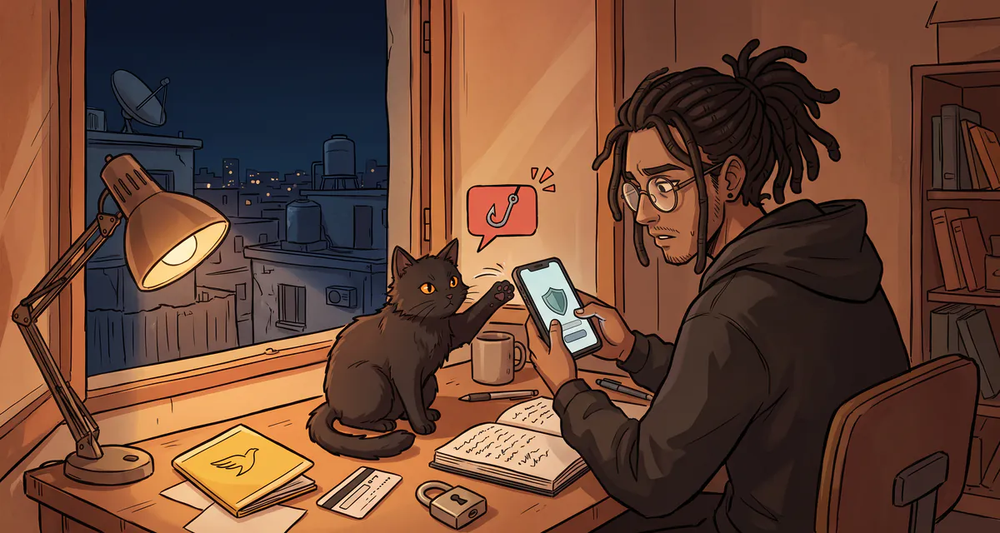
Le dossier · Acte II · 5 / 6
Clés
Crypto 101 · avec Raven
Un message signé « support » arrive, l’air officiel. Il parle du portefeuille que Selma a ouvert pour voir.
La règle
En crypto, ce qu’on possède, c’est la clé : la phrase de récupération ne se donne à personne.

À lire
Lire chaque explication
Ouvrez les explications qui vous intéressent : chacune dit pourquoi. Le quartier se termine par sa situation, pas par cette lecture.
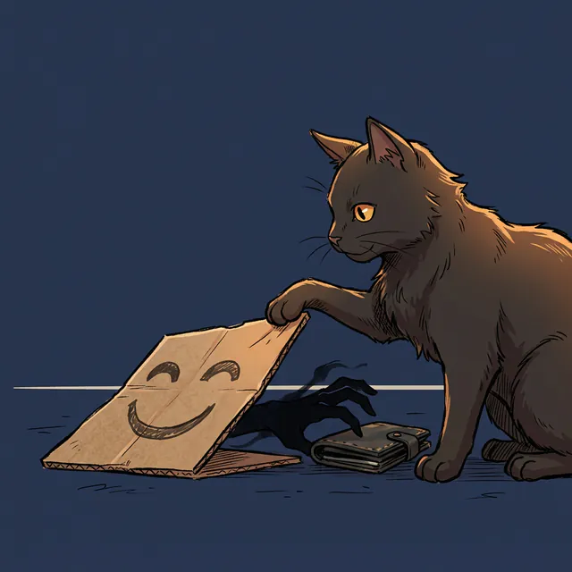
Une cryptomonnaie est une ligne dans un registre public. Ce que vous possédez, c’est la clé qui permet de la déplacer.
PortefeuilleUn logiciel ou un appareil qui garde vos clés. Il ne contient pas les pièces : elles restent dans le registre.
Phrase de récupérationUne suite de mots, souvent 12 ou 24, qui recrée vos clés. Qui la lit prend tout. Personne de sérieux ne vous la demandera jamais.
StablecoinUn jeton conçu pour suivre une monnaie, souvent le dollar. Il vaut ce que vaut la solidité de celui qui l’émet.
Frais de réseauChaque envoi paie le réseau qui le transporte. Le montant change selon le réseau et l’heure. Un envoi sur le mauvais réseau peut être perdu.
IrréversibleUn envoi confirmé ne s’annule pas. Vérifiez l’adresse, puis envoyez d’abord un petit montant.
Un projet web3 ? Le cours client vous aide à décider s’il faut une blockchain →
Ces leçons sont de l’éducation, pas un conseil financier ni un conseil en placement. Aucun signal de trading, aucune gestion de fonds, aucune promesse de gain.
Les règles changent d’un pays à l’autre. En Algérie, la loi 25-10 de juillet 2025 interdit l’achat, la vente, la détention et la promotion des crypto-actifs : vérifiez toujours la loi là où vous vivez.
Crypto 101 · Ma phrase de récupération ne se donne à personne.
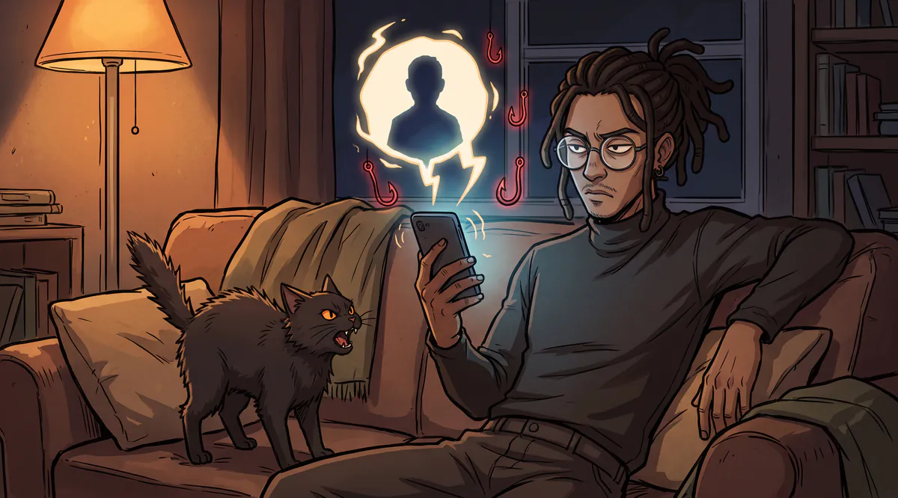
Le dossier · Traverse · 6 / 6
Appel
Le faux conseiller · avec Techno Pigeon
Un soir, le téléphone de Selma sonne : un « conseiller » annonce que son compte sera bloqué si elle n’agit pas tout de suite.
La règle
L’urgence n’est pas une information, c’est un signe d’arnaque : on raccroche.
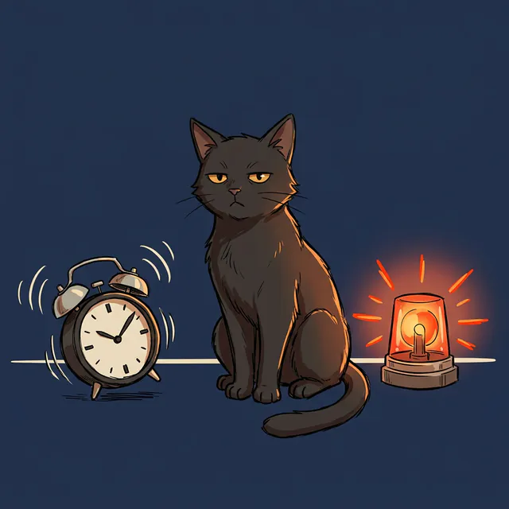

À lire
Lire chaque explication
Ouvrez les explications qui vous intéressent : chacune dit pourquoi. Le quartier se termine par sa situation, pas par cette lecture.
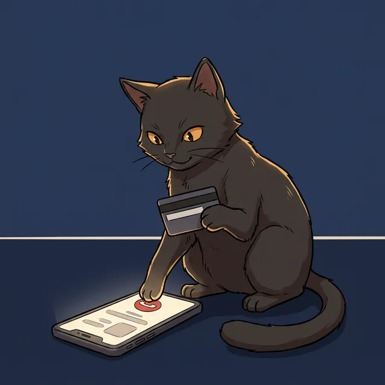
L’urgenceL’urgence n’est pas une information ; c’est un signe d’arnaque.
Le faux supportUsurpation. La phrase de récupération : aucun support ne la demande. Jamais.
Ce qui part vers un escrocIl ne se rappelle pas : la récupération est presque impossible (Europol).
La validation en deux étapesElle garde les voleurs dehors même s’ils connaissent votre mot de passe, tant que son code ne quitte pas votre téléphone : on ne le lit à personne au téléphone.
Ces leçons sont de l’éducation, pas un conseil financier ni un conseil en placement. Aucun signal de trading, aucune gestion de fonds, aucune promesse de gain.
Le faux conseiller · L’urgence est un signal : je raccroche.
Chez Selma · exemple inventé ·
Se faire payer de l’étranger
La Lanterne · librairie inventée
Le journal de bord
0 / 5 note · chemin de traverse 0 / 1
Faites un quartier jusqu’au bout, la situation puis l’exercice, pour inscrire la décision de l’équipe au journal.
Acte I · Être payé
- Se faire payer de l’étranger
L’éditeur attend une réponse : virement, plateforme, place de marché ou crypto ?
La route d’abord, le prix ensuite.
- Banques en ligne et comptes multidevises
Le service choisi, reste à savoir combien demander par jour.
Comparer le taux appliqué, pas l’affiche.
Acte II · Tenir ses comptes
- Fixer son tarif journalier
Le tarif posé, l’éditeur annonce qu’il paie à 60 jours.
Diviser par les jours facturés, pas par les jours travaillés.
- Budget et trésorerie
Les comptes tenus, un message du « support » arrive dans sa boîte.
Le délai du client devient mon besoin de trésorerie.
- Crypto 101
Selma garde sa phrase pour elle, et ses comptes en ordre.
Ma phrase de récupération ne se donne à personne.
Chemin de traverse · L’appel
- Le faux conseiller
Selma raccroche ; ses comptes restent en ordre.
L’urgence est un signal : je raccroche.
Le sac · inventaire
Le sac
0 souvenir sur 6
Chaque quartier fait ajoute un souvenir au sac. Vos progrès restent dans ce navigateur, s’il les garde ; rien ne part d’ici.
Acte I · Être payé
- RouteLe tampon « Route »Souvenir pas encore gagné
- ChangeLe tampon « Change »Souvenir pas encore gagné
Acte II · Tenir ses comptes
- TarifLe tampon « Tarif »Souvenir pas encore gagné
- TrésorerieLe tampon « Trésorerie »Souvenir pas encore gagné
- ClésLe tampon « Clés »Souvenir pas encore gagné
Chemin de traverse · L’appel
- AppelLe tampon « Appel »Souvenir pas encore gagné
La Librairie
Pour en parler à deux, les services à prix fixe sont au comptoir de la Librairie. Aller au comptoir